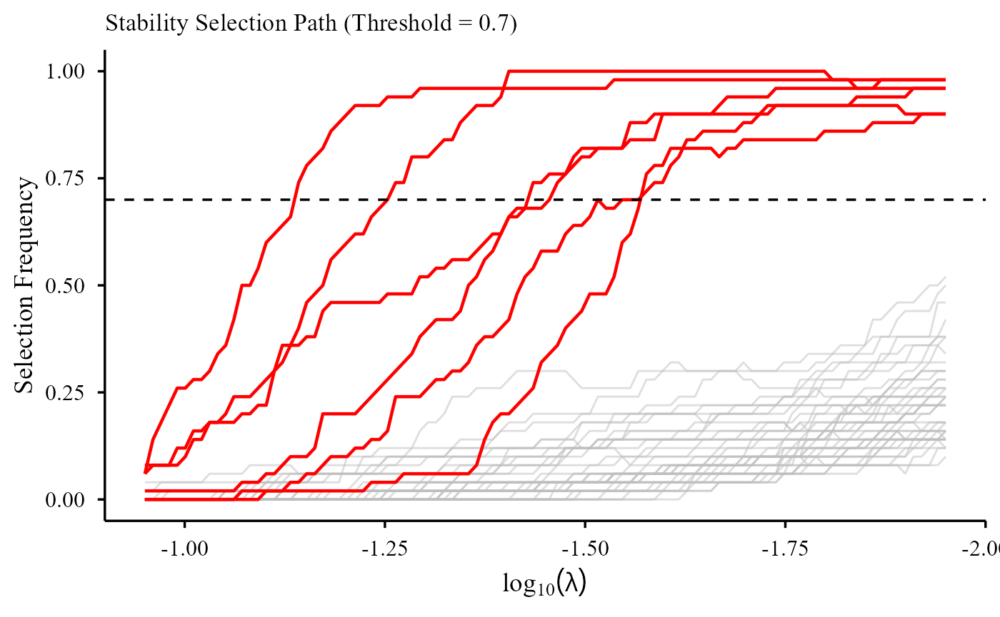
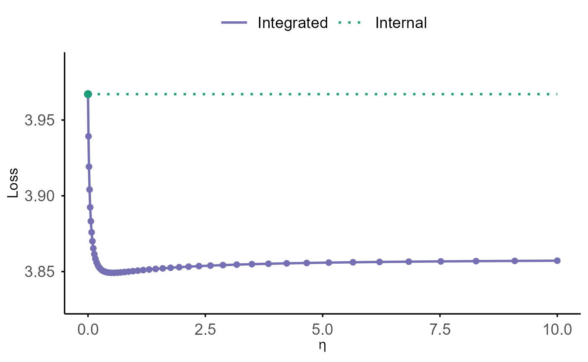
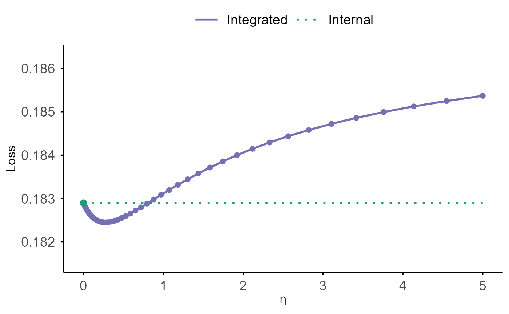
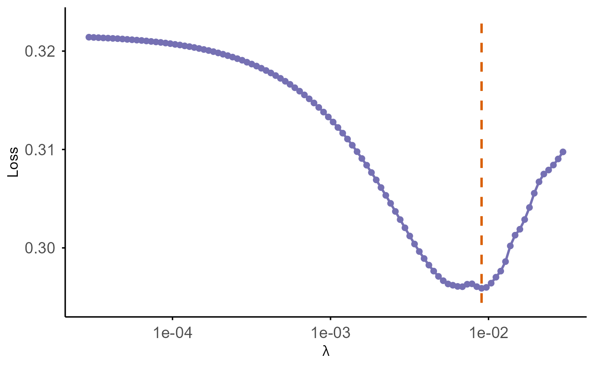

SurvBregDiv: Bregman Divergence Data Integration for Time-to-Event Modelling
SurvBregDiv.Rmd1. Introduction
Accurate prognostic modeling is a central goal in survival analysis. The rapid expansion of large-scale biobank initiatives—with rich genetic, molecular, imaging, and electronic health record data—has created new opportunities to improve predictive performance in clinical and epidemiologic research. However, these datasets often exhibit limited effective sample sizes, high dimensionality, low signal-to-noise ratios, and additional practical constraints including privacy considerations and restricted data access.
Integrating external information offers a principled strategy for improving model efficiency. Yet, classical data-integration methods typically rely on the assumption that multiple datasets arise from a common data-generating mechanism. In modern biomedical applications, this assumption is rarely satisfied. Misspecification due to population heterogeneity can induce substantial bias, motivating the development of transfer-learning approaches that explicitly accommodate between-source discrepancies.
While Bregman divergence has been successfully applied to borrowing information in binary-outcome settings, extending such ideas to censored time-to-event outcomes is nontrivial due to right censoring and the limited nature of available external survival information (e.g., predicted risk scores, fitted regression coefficients, or hazard ratios without access to a baseline hazard).
Beyond full-cohort survival studies, many biomedical investigations rely on the nested case–control (NCC) design to alleviate the burden of labor-intensive measurements, high-cost data acquisition, and destructive or finite biospecimen assays. Under an NCC design, only a small number of matched controls are sampled at each failure time, producing survival data that are analyzed through conditional logistic regression applied to matched risk sets. Despite its practical relevance, no existing methodology or software supports transfer learning or external information borrowing under NCC designs.
The SurvBregDiv package addresses these challenges by
providing a unified Bregman Divergence transfer-learning framework for
both full-cohort Cox data and nested case–control designs. The methods
integrate external information in a privacy-preserving manner and are
applicable to both low-dimensional settings and high-dimensional
variable selection with ridge, lasso, and elastic net penalties.
Key Features
Transfer learning via Bregman Divergence
Integrates external information through Bregman divergence–based penalization, enabling adaptive borrowing from heterogeneous data sources.Flexible external information formats
Supports incorporation of external information provided either as individual-level data or as summary-level inputs, such as regression coefficients, risk scores, or information defined on partially overlapping covariate sets.Privacy-preserving external information use
Allow summary-level external inputs—such as fitted coefficients or risk scores—without requiring individual-level external data access.Heterogeneity-aware borrowing
Accommodates population differences through tuning-parameter–controlled shrinkage, selectively borrowing strength only when sources are compatible.High-dimensional modeling with regularization
Supports penalized KL-integrated models, including ridge, lasso, and elastic net penalties for variable selection and shrinkage.
This vignette introduces the core functionalities of
SurvBregDiv and illustrates workflows for both low- and
high-dimensional applications.
2. Usage Tutorial
In this tutorial, we provide a practical guide to using our integration software, including model fitting, hyperparameter tuning, visualization, and etc.
The software supports coefficient estimation for low-dimensional settings and variable selection for high-dimensional settings. We use the example datasets included in the software to illustrate how each approach can be applied.
For Cox proportional hazards model data integration, please refer to Section Cox Proportional Hazards Model Data Integration for details;
For (nested) case-control designs, see Section (Nested) Case-Control Data Integration for details.
2.1 Installation
You can install the software from CRAN:
install.packages("SurvBregDiv")Or install the development version of SurvBregDiv from
GitHub:
require(devtools)
require(remotes)
remotes::install_github("UM-KevinHe/SurvBregDiv", ref = "main")Additional options refer to help(install.packages).
We load the package by:
2.2 Cox Proportional hazards model
Depending on the type of external data available, the framework supports three broad methodological settings, each implemented through a corresponding set of functions:
Individual-level external data available. When individual-level external data are accessible (e.g., for time-to-event outcomes, the user has covariates, survival outcomes, and follow-up times from an external cohort), the software provides the function such as
cox_indi()and related downstream utilities. These functions implement data integration through a weighted pseudo-likelihood framework (Wang and Zidek 2005; Gao and Carroll 2017). Details can be found in Individual-Level External Data Integration.Only summary-level regression estimates available. If, due to practical or regulatory constraints, the external source can provide only summary-level estimated regression coefficients , the user can perform data integration via the Kullback–Leibler divergence. Details can be found in Section Kullback–Leibler Divergence Data Integration.
Regression estimates plus curvature information available. If, in addition to estimated external regression coefficients, the user can also provide a positive semidefinite matrix summarizing the curvature of the external objective function (e.g., an information matrix, a variance–covariance matrix, or variance information only), the user can perform data integration via the quadratic Mahalanobis distance. Details can be found in Section Mahalanobis Distance Data Integration.
2.2.1 Individual-Level External Data Integration
When individual-level data are available for both the internal and
external cohorts, the function cox_indi() fits a Cox
proportional hazards model that integrates information from both
datasets via a weighted pseudo-likelihood approach. To use this
integration approach, the user must provide at least the covariate
matrices, event indicators, and event time for both internal and
external cohort.
We provide a toy example to illustrate the use of the software based
on the built-in dataset ExampleData_indi. This dataset
contains example time-to-event data from both internal and external
sources, including the covariate matrices, stratum information, event
indicators, and event times.
data(ExampleData_indi)
z_int <- ExampleData_indi$internal$z
delta_int <- ExampleData_indi$internal$status
time_int <- ExampleData_indi$internal$time
stratum_int <- ExampleData_indi$internal$stratum
z_ext <- ExampleData_indi$external$z
delta_ext <- ExampleData_indi$external$status
time_ext <- ExampleData_indi$external$time
stratum_ext <- ExampleData_indi$external$stratumThe function cox_indi() fits a sequence of weighted
stratified Cox models that integrate the internal and external datasets
through a list of integration weights
,
which governs the degree of information borrowing (via function argument
etas):
-
= 0 corresponds to the standard Cox model with no external contribution,
and
- larger values of increasingly pull the estimated coefficients toward the external information.
The user should rely on prior knowledge or problem-specific considerations to determine an appropriate range of ’s.
eta_list <- generate_eta(method = "exponential", n = 50, max_eta = 10000)
fit.cox_indi <- cox_indi(
z_int = z_int,
delta_int = delta_int,
time_int = time_int,
stratum_int = stratum_int,
z_ext = z_ext,
delta_ext = delta_ext,
time_ext = time_ext,
stratum_ext = stratum_ext,
etas = eta_list
)For hyperparameter tuning of
,
we aim to select the value of
that yields the best predictive performance. We adopt cross-validation
and consider four criteria: two based on Harrell’s C-index (Harrell et al. 1982)—CIndex_pooled
and CIndex_foldaverage—and two loss-based
criteria—LinPred and V&VH. For details,
please refer to Page: Appendix: CV Criteria.
We provide an example illustrating the use of the cross-validation
function cv.cox_indi() under the V&VH
criterion.
cvfit.cox_indi <- cv.cox_indi(
z_int = z_int,
delta_int = delta_int,
time_int = time_int,
stratum_int = stratum_int,
z_ext = z_ext,
delta_ext = delta_ext,
time_ext = time_ext,
stratum_ext = stratum_ext,
etas = eta_list,
nfolds = 5,
criteria = "V&VH"
)2.2.2 Kullback–Leibler Divergence Data Integration
Due to practical or regulatory constraints, only summary-level information may be available from the external source, typically in the form of estimated regression coefficients or an external risk score . In such cases, data integration can be carried out through a Kullback–Leibler divergence formulation. The minimal input required for this approach is , corresponding to the coefficient estimates obtained from the external model, or the external risk score.
We present the usage of the functions for low-dimensional and high-dimensional settings separately.
Low-Dimensional Integration
We begin with low-dimensional settings, where the
number of predictors is modest. Similarly, we provide a built-in
low-dimensional simulated dataset ExampleData_lowdim, which
consists of a training set (100 samples) and a test set (2000 samples)
with six predictors. We first extract the training components:
data(ExampleData_lowdim)
train <- ExampleData_lowdim$train
test <- ExampleData_lowdim$test
z <- train$z
delta <- train$status
time <- train$time
strat <- train$stratumThe corresponding built-in external regression coefficients can be obtained as follows:
beta_ext <- ExampleData_lowdim$beta_external_fairTo fit the KL divergence–based integrated model, we first generate a
suitable range of integration weights
using the function generate_eta(). The user should rely on
prior knowledge or problem-specific considerations to determine an
appropriate range. We then use the function coxkl() to fit
the model. The external regression coefficient
is supplied to the function through the argument
beta =.
eta_list <- generate_eta(method = "exponential", n = 50, max_eta = 10)
fit.coxkl <- coxkl(
z = z,
delta = delta,
time = time,
stratum = strat,
beta = beta_ext,
etas = eta_list
)Alternatively, instead of providing
,
users may supply an external risk score vector via the argument
RS =:
RS_ext <- as.matrix(z) %*% as.matrix(beta_ext)
fit.coxkl.RS <- coxkl(
z = z,
delta = delta,
time = time,
stratum = strat,
RS = RS_ext,
etas = eta_list
)The function cv.coxkl() performs
-fold
cross-validation (default
)
to select the integration parameter in the KL-integrated Cox model. We
consider four criteria: two based on Harrell’s C-index (Harrell et al. 1982)—CIndex_pooled
and CIndex_foldaverage—and two loss-based
criteria—LinPred and V&VH. For details,
please refer to Page: Appendix: CV Criteria. Below is an
example using the default "V&VH" criterion:
cvfit.coxkl <- cv.coxkl(
z = z,
delta = delta,
time = time,
stratum = strat,
beta = beta_ext,
etas = eta_list,
nfolds = 5,
criteria = "V&VH",
seed = 1)The cross-validated performance curve from hyperparameter tuning
functions cv.coxkl() can be visualized directly using
cv.plot():
cv.plot(cvfit.coxkl)
- The solid purple curve displays the cross-validated loss across different values of .
- The green dotted horizontal line marks the internal baseline at = 0, representing the model that does not incorporate external information.
- The vertical dashed orange line indicates the optimal value, where the cross-validated loss is minimized.
A comparison between the purple curve and the green baseline shows whether borrowing external information improves prediction performance. Whenever the purple curve falls below the green line, using external information ( > 0) yields better predictive accuracy than relying solely on the internal model.
For datasets containing tied event times, users can
apply the coxkl_ties() and cv.coxkl_ties()
function, which extends the KL integrated Cox model to explicitly
accommodate ties. The function allows users to choose between the
“breslow” (Breslow 1974) and “exact” (Cox 1972) methods for tie handling. The Breslow
method provides a computationally efficient approximation and is
generally suitable when the number of tied events is moderate, whereas
the exact method yields more accurate inference in the presence of
extensive ties at the cost of increased computational burden. The
following example demonstrates the use of the Breslow method.
time_ties <- round(time, 2) # Rounding time introduces ties for demonstration
fit.coxkl.ties <- coxkl_ties(
z = z,
delta = delta,
time = time_ties,
stratum = strat,
beta = beta_ext,
etas = eta_list,
ties = "breslow"
)High-Dimensional Integration
In high-dimensional regimes—such as when the number of predictors is
comparable to or exceeds the sample size—the SurvBregDiv
package extends KL divergence–integrated Cox modeling with
regularization.
Two families of penalties are implemented:
-
Ridge penalty
(),
via
coxkl_ridge()and related downstream functions, which shrinks coefficients toward zero while yielding dense solutions. -
LASSO penalty
()
and Elastic net penalty (a mixture of
and
),
via
coxkl_enet()and related downstream functions, to enable sparse variable selection.
In addition to the integration weight , which determines the extent of information borrowed from external sources, the high-dimensional functions involve a regularization parameter that governs the strength of regularization. The parameter is a mixing coefficient that controls the relative contribution of the (LASSO) and (Ridge) components.
The built-in high-dimensional simulated dataset
ExampleData_highdim contains a training set (200 samples)
and a test set (2000 samples). The dataset includes 50 predictors
(Z1–Z50), of which 6 are signal variables and
the remaining 44 are AR(1) noise variables. Externally derived
coefficients are provided in beta_external:
data(ExampleData_highdim)
train_hd <- ExampleData_highdim$train
test_hd <- ExampleData_highdim$test
z_hd <- train_hd$z
delta_hd <- train_hd$status
time_hd <- train_hd$time
strat_hd <- train_hd$stratum
beta_external_hd <- ExampleData_highdim$beta_externalThe function coxkl_ridge() fits a KL-integrated Cox
model with a Ridge (L2) penalty on all predictors. External information
is incorporated through a KL-based integration term weighted by
(a user-specified scalar), while regularization is imposed through a
sequence of tuning parameters
.
If
is not provided, the function automatically generates a decreasing
lambda path.
We begin by fitting a KL–ridge model for a fixed integration weight using an automatically generated lambda sequence:
fit.coxkl_ridge <- coxkl_ridge(
z = z_hd,
delta = delta_hd,
time = time_hd,
stratum = strat_hd,
beta = beta_external_hd,
eta = 1
)The fitted object stores, for each value of :
-
$lambda— the sequence of lambda values (in decreasing order), -
$beta— estimated coefficients (one column per lambda), -
$linear.predictors— linear predictors for all observations across the lambda path, -
$likelihood— partial log-likelihood along the lambda path, -
$data— the data used for fitting.
The function coxkl_enet() fits a KL-integrated Cox model
with an elastic-net penalty, controlled by the mixing parameter
alpha. When alpha = 1, the penalty reduces to
LASSO, introducing coefficient sparsity in addition to KL-based
integration of external information. Similar, the penalty parameter
controls sparsity. If
is not provided, the function automatically generates a decreasing
lambda sequence.
Below, we illustrate the workflow using the LASSO special
case (alpha = 1) with an automatically generated lambda
path:
fit.coxkl_LASSO <- coxkl_enet(
z = z_hd,
delta = delta_hd,
time = time_hd,
stratum = strat_hd,
beta = beta_external_hd,
eta = 1,
alpha = 1 # LASSO penalty
)The fitted object stores, for each lambda value:
-
$lambda— the lambda sequence (in decreasing order), -
$beta— estimated coefficients (one column per lambda), -
$likelihood— partial log-likelihood along the lambda path, -
$data— the data used for fitting.
Objects from coxkl_ridge() or coxkl_enet()
functions can be visualized using the S3 plotting method
plot():
This plots (at given ):
- Loss or C-index versus the penalty parameter ,
- x-axis on a reversed log10 scale (larger penalties on the left, smaller penalties on the right),
- y-axis labeled as loss or C-index,.
- A vertical dashed orange line marks the optimal value of λ, where the loss reaches its minimum on the evaluated grid.
plot(
fit.coxkl_LASSO,
test_z = test_hd$z,
test_time = test_hd$time,
test_delta = test_hd$status,
test_stratum = test_hd$stratum,
criteria = "loss"
)
For penalized KL-integrated models, the functions
cv.coxkl_ridge() and cv.coxkl_enet() perform
K-fold cross-validation to tune the integration parameter
,
while internally scanning over a
path for each candidate
.
For each value of
,
the cross-validation procedure:
- evaluates a sequence of ridge or elastic-net penalties ,
- computes the chosen cross-validation criterion on the held-out folds,
- selects the best for that ,
- aggregates the performance across folds into summary tables.
The supported criteria also include two based on Harrell’s C-index
(Harrell et al.
1982)—CIndex_pooled and
CIndex_foldaverage—and two loss-based
criteria—LinPred and V&VH. For details,
please refer to Page: Appendix: CV Criteria.
Below we demonstrate tuning
using 5-fold cross-validation and the V&VH criterion
for the LASSO-penalized integrated model (alpha = 1). The
range of integration weights
can be generated by using the function generate_eta(). The
user should rely on prior knowledge or problem-specific considerations
to determine an appropriate range. (For ridge, use
cv.coxkl_ridge() analogously.)
eta_grid_hd <- generate_eta(method = "exponential", n = 50, max_eta = 100)
cvfit.coxkl_LASSO <- cv.coxkl_enet(
z = z_hd,
delta = delta_hd,
time = time_hd,
stratum = strat_hd,
beta = beta_external_hd,
etas = eta_grid_hd,
alpha = 1, # LASSO
nfolds = 5,
cv.criteria = "V&VH",
seed = 1
)The best for each (according to the chosen criterion) is provided by:
head(cvfit.coxkl_LASSO$integrated_stat.best_per_eta)## eta lambda Loss
## 1 0.00000000 0.10193604 2.842157
## 2 0.09953651 0.09773006 2.840152
## 3 0.20888146 0.09390799 2.838419
## 4 0.32900138 0.02575599 2.829181
## 5 0.46095806 0.02161908 2.817568
## 6 0.60591790 0.01818471 2.806310The helper function cv.plot() can be used to visualize
performance versus
:
cv.plot(cvfit.coxkl_LASSO)
The resulting plot displays:
- a purple curve showing the cross-validated performance across the sequence (loss or C-index),
- a green dotted horizontal line indicating the internal baseline at = 0,
- a green point marking the baseline performance,
- and a vertical dashed orange line denoting the optimal , where the cross-validated loss attains its minimum.
Variable Importance and Stability Selection
For high-dimensional integrated models, users are often interested in
identifying predictors that are selected in a stable and reproducible
manner under regularization. The function
variable_importance() assesses variable importance using a
bootstrap-based refitting strategy applied to the integrated LASSO or
elastic-net models fitted by cv.coxkl_enet. Specifically,
the model is repeatedly refit on bootstrap resamples of the data, and a
predictor is recorded as selected if its estimated coefficient is
nonzero in the cross-validated optimal model. The resulting importance
score for each variable is defined as its selection frequency across
bootstrap replications.
imp.coxkl <- variable_importance(
z = z_hd,
delta = delta_hd,
time = time_hd,
stratum = strat_hd,
beta = beta_external_hd,
etas = eta_grid_hd,
B = 50
)After computing variable importance based on bootstrap selection
frequencies, users can further call the generic plot()
method to visualize the relative importance of predictors. The
plot() method displays selection frequencies ordered from
highest to lowest, allowing users to easily identify variables that are
most consistently selected across bootstrap replications. Optional
arguments such as a selection-frequency threshold and the number of top
variables to display can be used to focus the visualization on the most
stable predictors.
plot(imp.coxkl, threshold = 0.6, top = 20)
Classical LASSO tuned via cross-validation performs well for prediction, but it is often unstable for variable selection: small perturbations of the data or changes in cross-validation splits may lead to different selected subsets, particularly in high-dimensional or correlated settings. Stability selection provides a complementary approach that emphasizes reproducibility by repeatedly perturbing the data and recording how frequently each variable is selected across subsamples.
The functions coxkl_enet.StabSelect() extend the
cross-validated elastic-net procedures (cv.coxkl_enet()) by
repeatedly fitting the integrated elastic-net model on multiple
subsamples (controlled by the parameter B). For each
subsample, the model is fit using its own cross-validated tuning
parameters, and the selection status of each variable along the
regularization path is recorded. The function returns the empirical
selection frequency of each variable across resamples and across the
entire penalty path, providing a stability-oriented summary of variable
importance.
coxkl.StabSelect <- coxkl_enet.StabSelect(
z = z_hd,
delta = delta_hd,
time = time_hd,
stratum = strat_hd,
beta = beta_external_hd,
etas = eta_list,
cv.criteria = "CIndex_pooled",
B = 50
)Objects returned by coxkl_enet.StabSelect can be
visualized using the S3 plotting method plot(). Users must
specify a selection frequency threshold between 0 and 1: variables whose
selection frequency exceeds this threshold are highlighted in the plot,
while the remaining variables are displayed in a muted color. The x-axis
corresponds to the penalty parameter
on a reversed log10 scale, and the y-axis shows the selection
frequency.
plot(coxkl.StabSelect, threshold = 0.7) 
Bagging for High-Dimensional Models
Besides cross-validated LASSO and stability selection, we additionally support an ensemble strategy that combines bootstrapping, external-data integration, and model aggregation. Conceptually similar to bootstrap aggregation (bagging).
For each bootstrap sample, the integrated model is refit with its own cross-validated tuning parameters, and the resulting linear predictors are aggregated across bootstrap replicates. Unlike stability selection, the goal here is not variable selection, but prediction stabilization: different bootstrap replicates may recruit different levels of external borrowing, allowing weak or noisy external signals to be averaged out rather than over-amplified by a single fit. As a result, this bagged integration approach reduces variance and improves predictive robustness compared to relying solely on a single cross-validated integrated LASSO model.
The functions coxkl_enet_bagging() implement this
ensemble strategy. The following example demonstrates how to apply
coxkl_enet_bagging() for bagged integration in
high-dimensional settings. The function inherits the arguments of
cv.coxkl_enet(), with an additional parameter
B that controls the number of subsamples used in the
ensemble.
bagging.coxkl <- coxkl_enet_bagging(
z = z_hd,
delta = delta_hd,
time = time_hd,
stratum = strat_hd,
beta = beta_external_hd,
etas = eta_list,
B = 5,
seed = 1
)The returned object contains the bagged coefficient estimate (stored
in bagging.coxkl$best_beta) as well as the all
bootstrap-specific estimates (bagging.coxkl$all_betas). In
practice, bagging.coxkl$best_beta can be treated as the
final integrated elastic-net coefficient vector for downstream analysis;
for example, risk scores on a new design matrix z_new can
be computed via the linear predictor
z_new %*% bagging.coxkl$best_beta, while
bagging.coxkl$all_betas can be inspected to assess the
variability of the bootstrap ensemble.
Multi-Source Integration
In many applications, multiple sources of external information may be available, each providing a distinct set of external coefficient estimates derived from different studies, populations, or modeling strategies. Instead of relying on a single external source, it can be beneficial to integrate information from multiple sources to obtain a more robust and less source-specific estimate.
The function coxkl_enet.multi() fits KL-integrated Cox
elastic-net models using multiple external coefficient vectors. The
model is fitted on the full dataset once for each element in beta_list,
and the resulting coefficient estimates are combined across sources
(e.g., by averaging) to obtain a single integrated estimate.
beta_list <- list(
ExampleData_highdim$beta_external,
ExampleData_highdim$beta_external.multi1,
ExampleData_highdim$beta_external.multi2,
ExampleData_highdim$beta_external.multi3,
ExampleData_highdim$beta_external.multi4,
ExampleData_highdim$beta_external.multi5
)
multi.out <- coxkl_enet.multi(
z = z_hd,
delta = delta_hd,
time = time_hd,
stratum = strat_hd,
beta_list = beta_list,
etas = eta_list,
combine = "mean"
)The output is an object contains the combined coefficient estimate as
well as the individual coefficient vectors obtained from each external
source. In particular, best_beta stores the aggregated
coefficient vector, while all_betas contains the
coefficient estimates from each fitted model.
2.2.3 Mahalanobis Distance Data Integration
Due to practical or regulatory constraints, only summary-level information may be available from the external source. Compared with Kullback–Leibler Divergence Data Integration, the Mahalanobis distance approach is applicable when the user can also provide a positive semidefinite matrix summarizing the curvature of the external objective function (e.g., an information matrix, a variance–covariance matrix, or variance information only). The minimal input required for this approach is and . If is not supplied, the function defaults to using the identity matrix, which reduces the Mahalanobis distance penalty to the squared Euclidean distance.
We present the usage of the functions for low-dimensional and high-dimensional settings separately.
Low-Dimensional Integration
We begin with low-dimensional settings, where the
number of predictors is modest. The description of the built-in
low-dimensional simulated dataset ExampleData_lowdim, as
well as the example external
,
is the same as in the KL divergence
section.
To fit the Mahalanobis distance–based integrated model, we first
generate a suitable range of integration weights
using the function generate_eta(). The user should rely on
prior knowledge or problem-specific considerations to determine an
appropriate range. We then use the function cox_MDTL() to
fit the model. The external regression coefficient
is supplied to the function through the argument beta =,
and the external curvature matrix
through the argument vcov =. Below, we illustrate the usage
when no external
matrix is provided by setting vcov = NULL.
eta_list <- generate_eta(method = "exponential", n = 50, max_eta = 10)
fit.cox_MDTL <- cox_MDTL(
z = z,
delta = delta,
time = time,
stratum = strat,
beta = beta_ext,
vcov = NULL,
etas = eta_list
)Users may directly call the plot() method to visualize
the model’s fitted performance on the training data without providing
additional test data. If a test set is supplied, performance metrics are
computed using the test set instead:
plot(
fit.cox_MDTL,
test_z = test$z,
test_time = test$time,
test_delta = test$status,
test_stratum = test$stratum,
criteria = "loss"
) 
The function cv.cox_MDTL() performs
-fold
cross-validation (default
)
to select the integration parameter in the KL-integrated Cox model. We
consider four criteria: two based on Harrell’s C-index (Harrell et al. 1982)—CIndex_pooled
and CIndex_foldaverage—and two loss-based
criteria—LinPred and V&VH. For details,
please refer to Page: Appendix: CV Criteria. Below is an
example using the default "V&VH" criterion:
cvfit.cox_MDTL <- cv.cox_MDTL(
z = z,
delta = delta,
time = time,
stratum = strat,
beta = beta_ext,
etas = eta_list,
vcov = NULL,
nfolds = 5,
criteria = "V&VH",
seed = 1)The cross-validated performance curve from hyperparameter tuning
functions cv.cox_MDTL() can be visualized directly using
cv.plot():
cv.plot(cvfit.cox_MDTL)
High-Dimensional Integration
In high-dimensional regimes—such as when the number of predictors is
comparable to or exceeds the sample size—the SurvBregDiv
package extends Mahalanobis Distance–integrated Cox modeling with
regularization. The families of penalties, the tuning parameters, the
built-in high-dimensional dataset ExampleData_highdim, and
the workflow for fitting and tuning penalized KL-integrated models are
the same as described in the KL divergence
section. The only difference is that users should use the functions
cox_MDTL_ridge() and cox_MDTL_enet() for
fitting, and cv.cox_MDTL_ridge() and
cv.cox_MDTL_enet() for cross-validation.
For example, we fit a Mahalanobis Distance-integrated Ridge model for a fixed integration weight using an automatically generated lambda sequence:
fit.cox_MDTL_ridge <- cox_MDTL_ridge(
z = z_hd,
delta = delta_hd,
time = time_hd,
stratum = strat_hd,
beta = beta_external_hd,
vcov = NULL,
eta = 1
)The fitted object stores, for each value of :
-
$lambda— the sequence of lambda values (in decreasing order), -
$beta— estimated coefficients (one column per lambda), -
$linear.predictors— linear predictors for all observations across the lambda path, -
$likelihood— partial log-likelihood along the lambda path, -
$data— the data used for fitting.
The function cox_MDTL_enet() fits a KL-integrated Cox
model with an elastic-net penalty, controlled by the mixing parameter
alpha. When alpha = 1, the penalty reduces to
LASSO, introducing coefficient sparsity in addition to KL-based
integration of external information. Similar, the penalty parameter
controls sparsity. If
is not provided, the function automatically generates a decreasing
lambda sequence.
Below, we illustrate the workflow using the LASSO special
case (alpha = 1) with an automatically generated lambda
path:
fit.cox_MDTL_LASSO <-cox_MDTL_enet(
z = z_hd,
delta = delta_hd,
time = time_hd,
stratum = strat_hd,
beta = beta_external_hd,
vcov = NULL,
eta = 1,
alpha = 1 # LASSO penalty
)The fitted object stores, for each lambda value:
-
$lambda— the lambda sequence (in decreasing order), -
$beta— estimated coefficients (one column per lambda), -
$likelihood— partial log-likelihood along the lambda path, -
$data— the data used for fitting.
Objects from cox_MDTL_ridge() or
cox_MDTL_enet() functions can be visualized using the S3
plotting method plot():
This plots (at given ):
- Loss or C-index versus the penalty parameter ,
- x-axis on a reversed log10 scale (larger penalties on the left, smaller penalties on the right),
- y-axis labeled as loss or C-index,.
- A vertical dashed orange line marks the optimal value of λ, where the loss reaches its minimum on the evaluated grid.
plot(
fit.cox_MDTL_LASSO,
test_z = test_hd$z,
test_time = test_hd$time,
test_delta = test_hd$status,
test_stratum = test_hd$stratum,
criteria = "loss"
)
For penalized KL-integrated models, the functions
cv.cox_MDTL_ridge() and cv.cox_MDTL_enet()
perform K-fold cross-validation to tune the integration parameter
,
while internally scanning over a
path for each candidate
.
For each value of
,
the cross-validation procedure:
- evaluates a sequence of ridge or elastic-net penalties ,
- computes the chosen cross-validation criterion on the held-out folds,
- selects the best for that ,
- aggregates the performance across folds into summary tables.
The supported criteria also include two based on Harrell’s C-index
(Harrell et al.
1982)—CIndex_pooled and
CIndex_foldaverage—and two loss-based
criteria—LinPred and V&VH. For details,
please refer to Page: Appendix: CV Criteria.
Below we demonstrate tuning
using 5-fold cross-validation and the V&VH criterion
for the LASSO-penalized integrated model (alpha = 1). The
range of integration weights
can be generated by using the function generate_eta(). The
user should rely on prior knowledge or problem-specific considerations
to determine an appropriate range. (For ridge, use
cv.cox_MDTL_ridge() analogously.)
eta_grid_hd <- generate_eta(method = "exponential", n = 50, max_eta = 100)
cvfit.cox_MDTL_LASSO <- cv.cox_MDTL_enet(
z = z_hd,
delta = delta_hd,
time = time_hd,
stratum = strat_hd,
beta = beta_external_hd,
vcov = NULL,
etas = eta_grid_hd,
alpha = 1, # LASSO
nfolds = 5,
cv.criteria = "V&VH",
seed = 1
)The helper function cv.plot() can be used to visualize
performance versus
:
For variable importance and stability selection, the functions
variable_importance() and
cox_MDTL_enet.StabSelect() can be applied to the
Mahalanobis distance–integrated elastic-net models fitted by
cv.cox_MDTL_enet(), using the same interface and workflow
as described in the sections on variable
importance and stability selection and Bagging in the KL divergence section.
2.3 (Nested) Case-Control Design
In the NCC setting, event times are represented through matched
case–control sets, and estimation proceeds via conditional logistic
regression. SurvBregDiv enables external information
borrowing within this framework through Bregman divergence, allowing
improved efficiency while respecting the matched-set structure. The
remainder of this section demonstrates the core usage and workflow.
Standard matched case–control or matched cohort studies can be viewed as
special cases of the NCC design.
We adopt the KL-divergence approach for data integration and present the usage of the functions for low-dimensional and high-dimensional settings separately.
2.3.1 Low-Dimensional Integration
The built-in simulated dataset for NCC designs,
ExampleData_cc, contains a training set (1000 samples) and
a test set (2500 samples). The data include a stratum
variable, where observations with the same stratum ID belong to the same
matched set. The training data contain 200 matched sets and the test
data contain 500 matched sets, each constructed under a 1:4 matching
scheme. The dataset further includes six predictors
(Z1–Z6). Externally derived coefficients are
provided in beta_external:
data(ExampleData_cc)
train.cc <- ExampleData_cc$train
test.cc <- ExampleData_cc$test
z.cc <- train.cc$z
y.cc <- train.cc$y
set.cc <- train.cc$stratum
beta_ext.cc <- ExampleData_cc$beta_externalThe main fitting function for this setting is clogitkl.
Users must specify the tie-handling method via the method
argument. For 1:M matched case–control studies, "breslow"
and "exact" yield identical results, although
"exact" is theoretically preferable. For n:m matched
designs with
,
the two methods can differ.
To use the KL divergence–based integrated model, the user must at
least provide the estimated external regression coefficients
via the argument beta in the function
clogitkl(). The integration weights
can be generated using the function generate_eta(). The
user should rely on prior knowledge or problem-specific considerations
to determine an appropriate range of
values.
eta_list <- generate_eta(method = "exponential", n = 50, max_eta = 5)
clogitkl.fit_breslow <- clogitkl(y = y.cc, z = z.cc, stratum = set.cc,
eta = eta_list, beta = beta_ext.cc,
method = "breslow")Users may directly call the plot() method to visualize
the model’s fitted performance on the training data without providing
additional test data. If a test set is supplied, performance metrics are
computed using the test set instead:
plot(
clogitkl.fit_breslow,
test_z = test.cc$z,
test_delta = test.cc$y,
test_stratum = test.cc$stratum,
criteria = "loss"
)
Cross-validation for tuning
can be performed via cv.clogitkl(), which performs K-fold
cross-validation to tune the integration parameter
.
The supported criteria include predicted deviance
(loss), AUC (Hanley and
McNeil 1982), and Brier Score (Brier)(Glenn et al. 1950). For details, please refer
to Page: Appendix: CV Criteria.
Below we demonstrate tuning
using 5-fold cross-validation and the V&VH criterion
for the LASSO-penalized integrated model (alpha = 1). The
range of integration weights
can be generated by using the function generate_eta(). The
user should rely on prior knowledge or problem-specific considerations
to determine an appropriate range. (For ridge, use
cv.coxkl_ridge() analogously.)
cv.clogitkl.fit_breslow <- cv.clogitkl(
y = y.cc,
z = z.cc,
stratum = set.cc,
beta = beta_ext.cc,
etas = eta_list,
method = "exact",
nfolds = 5,
criteria = "loss"
)The cross-validated performance curve can be visualized using
cv.plot():
cv.plot(cv.clogitkl.fit_breslow)
The plot displays a purple curve tracing the cross-validated performance across the grid, a green dotted horizontal line representing the internal baseline at = 0 (with a green point marking its value), and a vertical dashed orange line indicating the optimal at which the cross-validated loss is minimized.
2.3.2 High-Dimensional Integration
The built-in simulated dataset for NCC designs,
ExampleData_cc_highdim, contains a training set with 50
matched sets and a test set with 500 matched sets, each constructed
under a 1:5 matching scheme. The dataset includes 10 predictors
(Z1–Z20). Externally derived coefficients are
provided in beta_external:
data(ExampleData_cc_highdim)
train.cc_hd <- ExampleData_cc_highdim$train
test.cc_hd <- ExampleData_cc_highdim$test
z.cc_hd <- train.cc_hd$z
y.cc_hd <- train.cc_hd$y
set.cc_hd <- train.cc_hd$stratum
beta_ext.cc_hd <- ExampleData_cc_highdim$beta_externalFor high-dimensional NCC data, we demonstrate usage with
clogitkl_enet(), which fits KL-integrated conditional
logistic regression models with elastic-net penalties.
clogitkl_enet_fit <- clogitkl_enet(
y = y.cc_hd,
z = z.cc_hd,
stratum = set.cc_hd,
beta = beta_ext.cc_hd,
eta = 0
)The fitted object can be visualized using the S3 plot()
method:
plot(
clogitkl_enet_fit,
test_z = test.cc_hd$z,
test_delta = test.cc_hd$y,
test_stratum = test.cc_hd$stratum,
criteria = "loss"
)
Cross-validation for tuning
can be performed via cv.clogitkl_enet():
eta_list <- generate_eta(method = "exponential", n = 50, max_eta = 5)
cv.clogitkl_enet_fit <- cv.clogitkl_enet(
y = y.cc_hd,
z = z.cc_hd,
stratum = set.cc_hd,
beta = beta_ext.cc_hd,
etas = eta_list,
alpha = 1,
nfolds = 5,
criteria = "loss"
)The cross-validated performance curve can be visualized using
cv.plot():
cv.plot(cv.clogitkl_enet_fit)
The plot displays a purple curve tracing the cross-validated
performance across the
grid, a green dotted horizontal line representing the internal baseline
at eta = 0 (with a green point marking its value), and a
vertical dashed orange line indicating the optimal
at which the cross-validated loss is minimized.